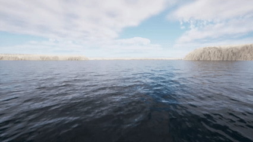

FFT Wave Controller
HoloOcean worlds have FFT wave settings that can be configured, either with the scenario or real time with commands. The FFT waves will impact the buoyancy of the surface vessel and the movement of underwater vehicles while they are close to the surface.
{kind=link}

Sea state 1 on pier harbor map.

Sea state 4 on pier harbor map.

Sea state 9 on pier harbor map.
Configuring FFT Waves
Holoocean worlds have a FFT wave configuration and command. This allows you to define the FFT waves in the simulation before running or to do more precise changes during a simulation. If you want FFT waves in your world you must include the fft_waves config, otherwise they will not spawn.
In a Scenario
To setup FFT waves in your config file, you can either define a sea state or define various wave parameters.
Sea State Config:
This config introduces FFT waves into the world which can then be modified with commands during simulation.
config = {
"name": "waves",
"world": "OpenWater",
"main_agent": "sv0",
"fft_waves": {"sea_state": 0},
}
Wave Parameters Config:
config = {
"fft_waves": {
"sea_state": 2,
"wind_directionality": [0.5, 0.5, 0.5, 0.5],
"wind_tighten": [0.5, 0.5, 0.5, 0.5],
"wind_direction": 180,
"foam_threshold": 0.1,
"wave_speed": 6,
"boat_buoyancy": 0,
"wave_force": 1.5,
"max_influence_depth": 5
},
}
In addition to these parameters, you can also set the wind_speed parameter. However, there is no point in setting both wind_speed and sea_state as they both change the height of the waves.
Parameter definitions can be found at FFT Wave API under fft_wave_scalars and fft_wave_cascades.
With a Command
env.fftwaves.fft_sea_state(6)
fft_wave_scalers_config = {
"WindSpeed": 4,
"WaveSpeed": 3,
"WindDirection": 180,
}
env.fftwaves.fft_wave_scalars(fft_wave_scalers_config)
fft_wave_cascades_config = {
"WindDirectionality": [1, 1, 1, 1],
"WindTighten": [0, 0, 0, 0]
}
env.fftwaves.fft_wave_cascades(fft_wave_cascades_config)
There are a few basic FFT wave commands. env.fftwaves.sea_state just sets the sea state from 0 - 9. env.fftwaves.wave_scalars allows you to set various wave parameters that only take in one value. env.fftwaves.wave_cascades allows to set the wave parameters with 4 values, one for each cascade. While you are able to change every parameter regarding FFT waves, the best ones to change are the ones available through the config as they have the most influence while retaining realism. You can see which parameters work with each command here: FFT Wave API.
Default Values
Amplitude: 168000.0, 64000.0, 4000.0, 240.0
Wind Directionality: 1.0, 1.0, 1.0, 1.0
Choppiness: 1.5, 1.5, 1.5, 1.5
Patch Length: 10.0, 28.0, 432.0, 2000.0
Short Wave Cutoff: 0.0001, 0.002, 2.0, 30.0
Long Wave Cutoff: 1.0, 0.25, 0.125, 0.04
Wind Tighten: 1.0, 1.0, 1.0, 1.0
Foam Injection: 1.0
Foam Threshold: -0.25
Foam Fade: 0.1
Foam Blur: 2.0
Wind Speed: 0.0
Wind Direction: 0.0
Repeat Period: 1000.0
Roughness Power: 0.5
Num Roughness Samples: 128
Wave Speed: 9.8
Boat Buoyancy: 1 (true)
Wave Force: 1
Max Influence Depth: 10
Generate New Mesh: 0
Sea State values
Sea states are preset wind speed values that approximate the WMO sea state code
SS1: 2
SS2: 4
SS3: 6
SS4: 8
SS5: 10
SS6: 13
SS7: 16
SS8: 20
SS9: 30
Worlds Without FFT waves
Worlds from before the 2.4.0 HoloOcean update, or custom worlds that haven’t implemented FFT waves, will not be able to support wave imagery during simulation. Your experience with HoloOcean will not change if you do not include FFT waves in your config. However, if you include FFT waves, then your agent will experience wave buoyancy without any of the visuals of FFT waves. If want to have FFT waves in your world you must update to worlds to an equal or greater version than 2.4.0.
Buoyancy Configuration
When using FFT waves, you may still want to use the old buoyancy system so that you can have the visuals of large FFT waves and calm water for underwater agents. This can be done by adding the buoyancy config. Without this config option, the buoyancy will default to the mesh based system compatible with FFT waves.
"fft_waves": {"sea_state": 4},
"buoyancy": 0,
- Bounding Box Buoyancy (``0``)
Bounding box buoyancy is the original buoyancy system used by holoocean. This is still used by default when running holoocean without FFT waves and cannot be changed. When running FFT waves you have the option to enable this system. As this was not created with FFT waves it is largely incompatible, but still could have some use cases in specific situations.
- Mesh Based Buoyancy (``1``)
Meshed based buoyancy is the default system when using holoocean with FFT waves. This buoyancy system was made to be compatible with FFT waves and is configurable to your needs.
Note
Mesh based buoyancy is an estimation and may not reflect real world buoyancy interactions. To change how this buoyancy affects your agent, change the values of the “max_influence_depth” or “wave_force” parameters either in the config or with commands.
Adding FFT Waves to a Custom Level
FFT Waves are functional through a joint CPU and GPU implementation. In Unreal there is a Niagara system that is located in content at FFT_OceanWaterWave/Effects/FX_OceanWaves. This along with the other folders within FFT_OceanWaterWaves make up the visualization of the FFT waves, all of which is done on the GPU. To add FFT waves to a custom level, please follow the instructions here: Adding FFT Waves.
The best way to change the parameters of your FFT waves is through the config and the commands. However, if you decide that you want to change the default parameters you must change them in your world’s FX_OceanWaves, and in the c++ file OceanFFTData.h. If you decide to add/remove any variables from this file then make sure to mirror your change in OceanFFTCalculator.ispc or else Unreal may crash.
Adding Custom Agents
With the addition of FFT waves, when FFT waves are turned on a new buoyancy system is used. This new system uses a mesh based approach to calculate the buoyancy experienced by an agent. To add a new agent, follow the instructions in developing agents: Adding Agents